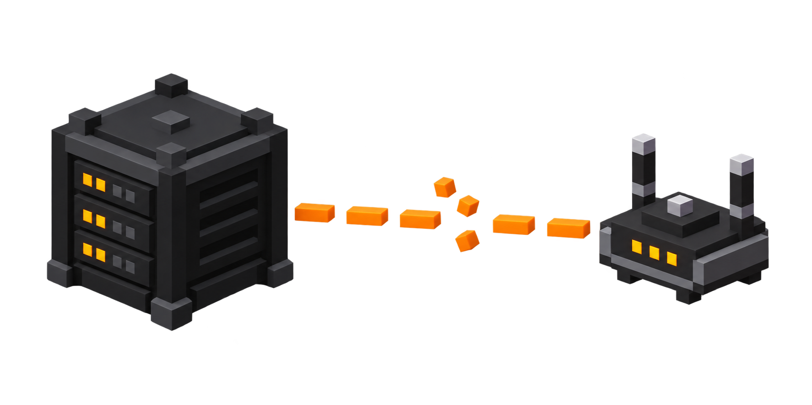

← ana sayfaya dön
canlı sunucu günlüğü
Canlı Log
Sunucu günlüğünün son 200 satırı. Komut çalıştırmak için aşağıdaki kutuyu kullan.
Sunucu çevrimdışı, dosya sonu gösteriliyor.

Canlı veri için uygulamadan Siteyi Aç.
Bu komut tehlikeli görünüyor, emin misin?
Yükleniyor…